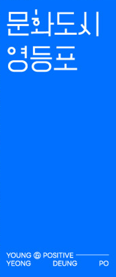

인류학은 낯선 타자를 이해하기 위한 학문으로 시작되었다. 그러나 동시대 예술가들은 탐사의 반경을 타자에 한정하지 않는다. 그들은 자기 자신과 공동체, 비인간적 존재, 그리고 미래적 상상까지를 연구의 장으로 확장하며, 이를 위해 인류학적 관찰과 기록의 방식을 적극적으로 차용한다. 문화인류학의 대표적인 방법론인 민족지(ethnography)는 특정한 시공간의 지정학적 맥락 속에서 공동체의 삶을 가까이 관찰하고, 때로는 그 안에 참여하며 기록하는 실천을 포함한다. 제국주의 시대에 서구가 비서구를 대상으로 발전시켜 온 이 방법론은 오늘날 문명의 전개 방식과 질서가 변화함에 따라 연구 대상과 접근 방식 모두에서 근본적인 전환을 겪고 있다. 가령 지난 세기의 질문인 "인간은 무엇인가"가 진화생물학과 사회과학이 제시한 인간의 정의를 전제로 했다면, 오늘날 "인간은 우리인가?"라는 질문은 그 전제 자체를 흔들며 '우리'의 경계와 질문이 성립하는 조건을 다시 사유하게 만든다.
문명을 구성해온 자연환경, 도시문화, 기술발전의 세 축은 이제 인류가 발전시킨 인공지능, 새롭게 합성된 물질적 환경, 그리고 그동안 가시화되지 않았던 비인간 존재 및 행성적 조건들과 얽히며 새로운 질서로 재편되고 있다. 팬데믹과 기후위기라는 전지구적 전환점을 거치며 이러한 변화는 더욱 가속화되었고, 예술과 기술의 단순한 결합을 넘어 서로를 조건짓고 변형시키는 동시대 미술 환경의 근본적인 전환을 이끌고 있다. 이번 전시는 이러한 전환의 한가운데에서 예술가를 단순한 문화생산자가 아닌 기술·환경·사회적 조건을 탐사하는 실천적 행위자, 곧 오늘날의 인류학자들Anthropologists로 호명한다. 이들은 더 이상 외부의 타자를 관찰하는 데 머무르지 않는다. 탐사의 반경은 자기 자신과 공동체에 내재한 타자성, 인간 중심적 존재론을 넘어 새롭게 호명되는 비인간 존재와 행성적 조건, 의인화된 기술과 끝없이 증식하는 인공사물들, 그리고 아직 도래하지 않은 미래와 인간의 경험 이전의 시간까지 포함한다.
전시 《인류학 연습: 인간은 우리인가?》 Doing Anthropology: Are Humans We?는 지난봄부터 최근까지 이어진 모임과 워크숍을 통해 축적된 예술적 연구와 기술적 협업의 과정을 하나의 시공간으로 응축하고, 그 과정에서 형성된 복잡다단한 인간의 풍경을 드러내는 일시적인 장이다. 참여 예술가들은 자신의 삶과 환경 속에서 채집한 감각과 데이터, 서사, 그리고 기술적 매개를 통해 구축한 시청각적 아카이브를 바탕으로 저마다의 민족지를 구성하고자 하였다. 이러한 예술적 민족지는 단순한 관찰과 기록을 넘어 인공지능 기술과 인터페이스, 데이터 구조와 네트워크를 횡단하는 기술적 조건 속에서 재구성되는 동시대의 분석 언어로 작동한다. 동시에 걷기, 쫓아가기, 말하기, 듣기, 쓰기, 지우기와 같은 가장 근본적인 인간의 행위와 반복 노동을 통해 세계와 자신, 경계 바깥에 대한 이해를 갱신하고자 하였다. 민족적 동질성과 사회적으로 합의된 의미 체계가 강하게 작동하는 한국 사회에서 이러한 접근은 외부를 향한 시선에 머무르지 않고 내부를 다시 관찰하도록 이끈다.
이처럼 전시는 오늘날 '인간'이라는 범주를 고정된 정의가 아니라 기술과 환경, 다양한 존재들과의 관계 속에서 끊임없이 재구성되는 과정으로 바라본다. 관객은 이 다층적인 기록과 서사 사이를 이동하며 타인의 경험 속에서 자신의 위치를 되묻고, 미래를 상상하는 과정에서 현재의 조건을 새롭게 사유하게 된다. 전시의 시간에 합류한 우리 모두는 잠시나마 각자의 자리에서 동시대의 인류학자가 되어 자신의 삶과 세계를 다시 관찰하고, '우리'라는 공동체와 '인간'이라는 보편적 명명 사이의 거리를 가늠하는 연습을 하게 될 것이다. 그리고 그 틈에서 그동안 충분히 주목받지 못했던 다양한 행위자들의 궤도와 위상을 다시 추적하며, 끝내는 인간이라는 질문으로 되돌아오게 될 것이다. 어쩌면 인류학을 연습한다는 것은 끝없이 타자를 향해 나아가는 일이 아니라, 그 모든 우회를 거쳐 인간을 다시 낯설게 만나는 일인지도 모른다.
기획
참여작가 , , , , , , , , , , ,
종근당고촌재단 생명과학융합예술교육 [바이오 오디세이]
카드를 누르면 신청 페이지로 연결됩니다.
각 프로그램 정원 15명(선착순), 1회 최대 4명까지 신청 가능합니다. 전 프로그램 무료.
모든 프로그램은 무료로 진행되나, 사전 신청자에게 먼저 좌석을 안내드리며, 상황에 따라 현장 관람객도 참여하실 수 있도록 안내할 예정입니다. 사전신청 후 부득이 참석이 어려울 경우 예약 취소를 부탁드립니다. 천재지변 및 주최측의 사정에 따라 프로그램의 일정과 내용에 변동이 있을 경우, 문화도시 영등포 공식 SNS(@cultural_city_ydp)를 통해 사전 고지하도록 하겠습니다.
전시를 관람하셨다면 3분만 내어 의견을 들려주세요.
참여해주시면 🇨🇭 스위스 메이드 PIGRA 볼펜을 드립니다.
대표이사 | 이건왕
문화도시센터장 | 김지훈
문화도시기획팀 | 문유석
문화도시기획팀 | 변채린
큐레이터 | 조주리
에디터 | 이연지
권희수, 김시흔, 김재민이, 듀킴, 반재하, 장영해, 장종완, 조영각, 주슬아, 최가영, 최고은, 최선, 종근당고촌재단 생명과학융합예술교육 [바이오 오디세이]
대행사 | (주)프럼에이
운영 | 조아라
홍보 | 양채원
그래픽 디자인 | 물질과비물질
공간조성 | 띵크앤메이크
영상 촬영 및 편집 | 높이와넓이
주최·주관 | 영등포구, 영등포문화재단, 영등포문화도시센터
협력 | 종근당고촌재단, 종도빌딩